유통관리사-2급 (2016-07-03 기출문제)
1과목: 유통물류일반
1. 신속반응(Quick Response)시스템의 효과에 대한 설명으로 가장 옳지 않은 것은?
- 소매업자 측면에서는 수익증대와 고객서비스 개선효과를 누릴 수 있다.
- 제조업자 측면에서는 생산 및 수요예측이 용이하고 상품 품절을 방지할 수 있다.
- 원자재로부터 최종제품에 이르는 리드타임의 단축과 재고감소가 일어난다.
- 안전재고가 늘어나 고객서비스가 높아진다.
- 소매업자와 제조업자가 시장변화를 감지할 수 있다.
(정답률: 72%)

2. 다음 글상자에서 설명하는 이것은?
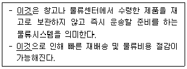
- DPS(Digital Picking System)
- Cross Docking System
- EOS(Electronic Ordering System)
- CIM(Computer Integrated Manufacturing System)
- ECR(Efficient Consumer Response)
(정답률: 68%)
3. 상품카테고리를 위한 척도에서 산출(output)과 관련된 자료로만 올바르게 나열한 것은?
- 순매출액, 매출성장, 재고수준
- 총수익, 매출성장, 순매출액
- 상품원가, 광고비, 재고수준
- 재고수준, 가격인하액, 광고비
- 순매출액, 재고수준, 재고회전
(정답률: 74%)
4. 타인의 요구(이익)에 대한 관심과 자신의 요구(이익)에 대한 관심을 기준으로 토마스(K. Thomas)가 분류한 갈등 대처유형에 포함되지 않는 것은?
- 경쟁
- 회피
- 공유
- 협동
- 중단
(정답률: 60%)
5. 편의점이나 대형할인점이 PB(Private Brand)상품에 주력하는 근본적인 이유로 가장 옳지 않은 것은?
- 전국적으로 높은 인지도의 상품취급으로 인한 매출 확대
- 편의성의 극대화
- 수익성의 개선
- 점포의 차별화
- 상품개발의 용이성
(정답률: 53%)
6. 다음 글상자에서 의미하는 '이들'에 대한 내용으로 옳지 않은 것은?
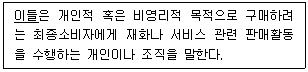
- 최종소비자들의 다양한 욕구를 충족시키기 위해 다양한 형태로 출현하였다.
- 소비자를 위해 수행하는 기능 중에는 상품구색 기능이 있다.
- 이들 중 하나인 drop shipper는 재고유지를 직접하지 않으며 석탄, 목재, 중장비 등 분야에서 활동한다.
- 자체의 신용정책을 통해 소비자 금융부담을 덜어주는 금융기능도 수행한다.
- 애프터서비스, 제품의 배달, 설치 등의 서비스도 제공한다.
(정답률: 69%)
7. 다음 글상자에서 공통적으로 설명하는 이것은?
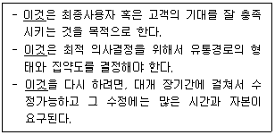
- 유통경로 관리
- 유통경로 성과평가
- 유통경로 설계
- 유통경로 갈등관리
- 유통경로 영향력 전략
(정답률: 74%)
8. 제조업체의 회계적 성과를 측정하는 활동성 비율에 해당하는 것은?
- 총자산수익률
- 매출채권 회전율
- 자기자본이익률
- 매출 총이익률
- 주가수익률
(정답률: 44%)
9. 다음 표의 관여도별 소비자 구매특징과 유통전략에 대한 내용으로 옳은 것을 모두 고르면?
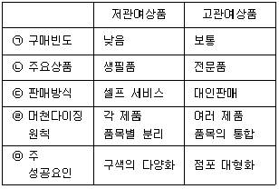
- ㉡, ㉢, ㉣
- ㉢, ㉤
- ㉡, ㉢
- ㉠, ㉡, ㉢
- ㉡, ㉣
(정답률: 68%)
10. 다음 두 사람의 대화에서 ( ㉠ ), ( ㉡ ) 안에 들어갈 소매상 유형으로 옳은 것은?
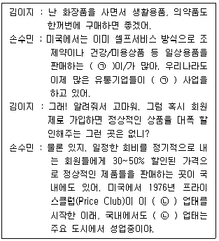
- ㉠ 전문할인점, ㉡ 회원제 창고형 소매점
- ㉠ 슈퍼슈퍼마켓, ㉡ 회원제 전문점
- ㉠ 드럭스토어, ㉡ 회원제 전문할인점
- ㉠ 슈퍼슈퍼마켓, ㉡ 회원제 소매점
- ㉠ 드럭스토어, ㉡ 회원제 창고형 도소매점
(정답률: 67%)
11. 다음 신문기사의 내용과 가장 관련이 깊은 유통의 기능은 무엇인가?
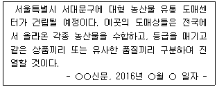
- 교환과정의 효율성 제고
- 거래의 반복화
- 구색형성 기능
- 소비자의 탐색과정 효율성 제고
- 판매촉진 기능
(정답률: 71%)
12. 효과성에 대한 설명으로 옳지 않은 것은?
- 효과성은 일정한 비용에 의해 얼마나 많은 산출이 발생하였는가 혹은 일정한 산출을 얻기 위해 얼마나 많은 비용이 투입되었는가를 나타내 주는 척도이다.
- 표적시장이 요구하는 서비스산출을 얼마나 제공하였는가를 측정하는 목표지향적인 성과기준이다.
- 효과적이지 않은 유통경로는 서비스 품질이 소비자가 원하는 수준에 미치지 못할 수 있다.
- 효과적이지 않은 유통경로는 제품정보가 불충분할 수 있다.
- 효과적이지 않은 유통경로는 고객이 지불하는 비용이 너무 높을 수 있다.
(정답률: 48%)
13. 대형마트가 성장정체기를 겪고 있는 이유와 가장 거리가 먼 것은?
- 장기적인 경기침체로 인한 소비위축
- 포화상태에 이른 매장 수
- 근거리, 소량 구매 소비 트렌드
- 온라인 쇼핑몰의 지속적 성장
- 낮은 직매입 비중
(정답률: 78%)
14. 물류비 분류 체계는 영역별, 기능별, 자가/위탁별, 세목별 그리고 관리항목별 등의 기준으로 구분될 수 있다. 이에 대한 설명으로 옳지 않은 것은?
- 영역별 물류비는 조달물류비, 사내물류비, 판매물류비 등을 포함한다.
- 기능별 물류비 중 유통가공비는 유통과정에서 물류효과를 향상시키기 위한 가공비용인데, 생산가공에 해당하지 않기 때문에 제조원가나 유통비에 포함시키면 안된다.
- 위탁물류비는 물류기능의 일부 또는 전부를 외부의 물류업자나 자회사에게 위탁하여 지불하는 비용이다.
- 세목별 물류비는 재료비, 노무비, 경비, 이자 등이다.
- 관리항목별 물류비 중 운송수단별 물류비는 해상, 항공, 육로, 철도 등의 운송수단에 지출된 비용을 의미한다.
(정답률: 70%)
15. 소매상 종업원을 위한 보상프로그램에 대한 설명으로 가장 옳지 않은 것은?
- 보상은 직접적인 금액 지불과 간접적인 지불을 포함한다.
- 의료보험, 생명보험, 장기근속자에 대한 퇴직 후 연금지급 등은 간접적인 지불에 포함된다.
- 고정급과 커미션을 조정하여 활용하는 것은 안정된 소득뿐만 아니라 뛰어난 노력에 대한 보상과 격려를 할 수 있는 방법이다.
- 성과정도와는 관련이 없는 고정급으로 정해진 급여를 지급하는 방식은 판매와 직접 관련이 없어서 자칫 등한시 할 수 있는 디스플레이, 재배치 등의 직무에 적절하다.
- 고정급 없이 판매액에 대한 일정비율을 지급하는 커미션 방식은 종업원들이 판매실적을 최우선으로 두기 때문에 소매상의 이미지에 가장 좋은 영향을 미친다.
(정답률: 57%)
16. 구매성과관리에 대한 설명으로 가장 옳지 않은 것은?
- 단기 업적 중심만으로 제한하여 실시한다.
- 가격, 시간, 납기, 대응성 등의 측정 지표를 사용한다.
- 성과와 활동을 구분하여 평가한다.
- 성과 평가 결과의 피드백을 통해 문제 재발을 사전에 방지할 수 있게 한다.
- 공급자 성과 및 이해관계자 만족도 외에도 정부나 사회, 내부고객 만족도 또한 포함한다.
(정답률: 81%)
17. 소비자기본법 제19조 사업자의 책무로 옳지 않은 것은?
- 사업자는 소비자의 올바른 권리행사를 이끌고, 물품 등과 관련된 판단능력을 높이며, 소비자가 자신의 선택에 책임을 지는 소비생활을 할 수 있도록 필요한 교육을 하여야 한다.
- 사업자는 물품 등으로 인하여 소비자에게 생명·신체 또는 재산에 대한 위해가 발생하지 아니하도록 필요한 조치를 강구하여야 한다.
- 사업자는 물품 등을 공급함에 있어서 소비자의 합리적인 선택이나 이익을 침해할 우려가 있는 거래조건이나 거래방법을 사용하여서는 아니된다.
- 사업자는 소비자의 개인정보가 분실·도난·누출·변조 또는 훼손되지 아니하도록 그 개인정보를 성실하게 취급하여야 한다.
- 사업자는 물품 등의 하자로 인한 소비자의 불만이나 피해를 해결하거나 보상하여야 하며, 채무불이행 등으로 인한 소비자의 손해를 배상하여야 한다.
(정답률: 71%)
18. 고객서비스 요인은 거래 전 요인, 거래요인 그리고 거래 후 요인으로 구분된다. 다음 중 거래 후 요인에 해당하지 않는 것은?
- 배달 후 무료로 포장 수거
- 고객이 원하는 시간에 적시배달
- 수리기간 중 대체품 제공
- 고객의 불평을 해결해 주는 것
- 제품 보증서비스
(정답률: 68%)
19. 지게차(포크리프트)로 하역도 할 수 있고 수송도 할 수 있는 단위운송방식을 지칭하는 것으로 가장 옳은 것은?
- 파렛트 시스템
- 복합선적 시스템
- 복합운송 시스템
- 컨테이너 시스템
- 콜드체인 시스템
(정답률: 76%)
20. 손익분기점분석에 대한 설명으로 가장 옳지 않은 것은?
- 손익분기점에서의 손익은 0이다.
- 손익분기점분석에서는 비용을 고정비와 변동비로 구분하여 매출액과의 관계를 분석한다.
- 손익분기점분석을 통해 목표이익을 얻기 위한 매출액을 계산할 수 있다.
- 손익분기점 판매량 = 총변동비/(단위당 판매가 - 단위당 고정비)
- 매출액이 손익분기점을 넘어 증가하면 이익이 발생하고 손익분기점을 밑돌면 손실이 발생한다.
(정답률: 66%)
21. 영업사원의 성과는 크게 과정지표와 결과지표로 나뉜다. 다음 중 영업사원의 결과지표로 옳지 않은 것은?
- 순추천지수
- 탈락계정수
- 주문건수
- 공헌마진
- 신규계정수
(정답률: 45%)
22. 매슬로우(A. Maslow)의 욕구단계이론에 따라 하급욕구에서 고급욕구로 올바르게 나열한 것은?
- 생리적 욕구 - 소속 욕구 - 안전 욕구 - 자존 욕구 - 자아실현 욕구
- 생리적 욕구 - 소속 욕구 - 자존 욕구 - 안전 욕구 - 자아실현 욕구
- 생리적 욕구 - 안전 욕구 - 소속 욕구 - 자존 욕구 - 자아실현 욕구
- 생리적 욕구 - 안전 욕구 - 자존 욕구 - 소속 욕구 - 자아실현 욕구
- 생리적 욕구 - 자존 욕구 - 소속 욕구 - 안전 욕구 - 자아실현 욕구
(정답률: 69%)
23. 정량주문법과 정기주문법에 대한 설명으로 옳지 않은 것은?
- 수량할인을 기대하기 힘들 때는 정기주문법이 합당하다.
- 계절에 따라 수요의 변동폭이 클 때는 정기주문법이 합당하다.
- 재고수준을 자동적으로 유지하지 못할 때는 정량주문법이 합당하다.
- 용도의 공통성이 높고 사용빈도가 많으며 매일 일정한 비율로 소비되는 물품인 경우에 정량주문법이 합당하다.
- 경제적 재주문점을 계산하기가 용이하고 이를 활용하는 것이 재고관리에 더욱 유리할 때는 정량주문법이 합당하다.
(정답률: 38%)
24. 유통경로 상의 이해관계가 상충(trade-off)되는 경우에 제조업체가 유통업체(중간상)를 효과적으로 관리하기 위한 조치로써 가장 적합하지 않은 것은?
- 유통업체와의 장기적인 파트너쉽 구축
- 유통업체에 대한 적절한 보상
- 유통업체와의 효율적인 커뮤니케이션
- 판매실적기준의 최대화
- 판매실적의 공정한 평가
(정답률: 77%)
25. 소비자에게 인도된 제품의 전체 또는 일부가 일정시간이 경과한 후 다시 생산자에게 돌아오거나 폐기되는 과정을 관리하는 것은?
- 생산물류
- 역물류
- 조달물류
- 판매물류
- 사내물류
(정답률: 86%)
2과목: 상권분석
26. 소매상권에 대한 내용으로 옳은 것은?
- 상권은 정적이지 않고 마케팅 전략, 가격, 점포 규모, 경쟁 등에 따라 수시로 변한다.
- 상권의 규모는 동일한 업종의 점포밀도에는 영향을 받지 않는다.
- 상권규모는 상권내 소비자의 숫자와는 관련이 있으나 구매빈도와는 관련이 없다.
- 상권내 인구밀도가 증가하면 동일한 유형의 점포밀도는 감소한다.
- 상품의 유형에 관계없이 상권의 범위는 일정하다.
(정답률: 68%)
27. 상권의 범위와 관련하여 '최대 도달거리'와 '최소수요 충족거리'라는 개념을 이용하여 설명한 사람은?
- 허프(D. L. Huff)
- 컨버스(P. Converse)
- 레일리(W. Reilly)
- 크리스탈러(W. Christaller)
- 애플바움(W. Applebaum)
(정답률: 60%)
28. A, B, C 세 점포의 크기와 소비자의 집으로부터 점포까지의 거리는 아래와 같다. 이 경우 Huff 모델을 적용하였을 때 이 소비자가 구매확률이 가장 높은 점포 및 그 점포를 선택할 확률은? (가정 : 이 소비자는 다음의 세 점포들에서만 상품을 구매할 수 있음. 소비자가 부여하는 점포 크기에 대한 효용은 1, 거리에 대한 효용은 -2임.)
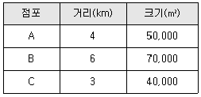
- A, 약 12.3%
- B, 약 35.5%
- B, 약 57.3%
- C, 약 35.5%
- C, 약 46.7%
(정답률: 51%)
29. 상권의 구조적 특성에 의해 상권을 분류할 때 다음 중 포켓상권에 해당하는 것은?
- 도로, 산, 강에 둘러싸인 상권
- 고속도로나 간선도로에 인접한 상권
- 대형소매점에 인접한 상권
- 소형소매점들이 다수 모인 상권
- 상가의 입구를 중심으로 형성된 상권
(정답률: 40%)
30. 어떤 한 도시에서 상권의 계층별 구조를 분석할 때 그 공간적 범위가 가장 넓은 것은?
- 지구상권
- 지역상권
- 특정 지하철역의 역세권
- 특정 입지의 상권
- 특정 오프라인 소매점포의 상권
(정답률: 71%)
31. 지역상권의 매력도를 평가할 때는 먼저 수요요인과 공급요인을 고려해야 한다. 이 요인들을 평가하는데 소매포화지수(IRS)와 시장성장잠재력지수(MEP)를 활용할 수 있다. 이 두 지수들을 기준으로 평가할 때 그 매력성이 가장 높은 지역상권은?
- IRS가 작고 MEP도 작은 지역상권
- IRS가 작고 MEP는 큰 지역상권
- IRS가 크고 MEP는 작은 지역상권
- IRS가 크고 MEP도 큰 지역상권
- IRS의 크기와는 상관없이 MEP가 큰 지역상권
(정답률: 72%)
32. 정보통신기술의 발달 덕분에 개인과 기업들의 거래 및 여타 활동에 관한 엄청난 분량의 정보를 일컫는 '빅데이터'에 대한 수집, 저장, 분석이 보편화되고 있다. 다음 중 빅데이터의 활용 가능성에도 불구하고 상권분석에 활용할 수 있는 가치가 가장 낮은 정보는?
- 지역 날씨에 관한 정보
- 지역 소매점들에 대한 입소문 관련 정보
- 지역 소비자들의 상품 구매 패턴에 관한 정보
- 지역 주민들의 대중교통수단별 이용 행태에 관한 정보
- 지역 주민들의 라이프스타일 관련 정보
(정답률: 67%)
33. 분석을 수행하는 상권분석 담당자의 주관적 판단이 개입될 가능성이 가장 큰 상권분석방법은?
- 체크리스트(check list)법
- Huff 모델
- 수정 Huff 모델
- MNL(Multi Nomial Logit) 모델
- 회귀분석법
(정답률: 71%)
34. 소매점의 상권은 업종과 업태의 영향을 받는다. 다음 중 가장 작은 상권을 대상으로 영업전략을 수립하는 업태는?
- 명품 전문점
- 패션 전문점
- 도심 백화점
- 편의점
- 슈퍼스토어
(정답률: 74%)
35. 일반적으로 피해야 할 점포의 입지조건이 아닌 것은?
- 곡선형 도로의 바깥쪽 보다 안쪽 입지
- 중앙분리대가 있어 교통안전성이 있는 입지
- 방사형 도로의 교차점에 가까운 입지
- T형 교차로의 막다른 길에 있는 입지
- 주도로에서 안쪽으로 떨어져 있는 내부획지
(정답률: 54%)
36. 상권의 유사개념 중 하나인 '상세권'을 설명하는 개념으로서 가장 관련성이 낮은 것은?
- 상가권
- 상업집단
- 상업집적
- 복수의 점포
- 잠재상권
(정답률: 56%)
37. 서로 떨어져 있는 두 도시 A, B의 거리는 30km이다. 이 때 A시의 인구는 8만명이고 B시의 인구는 A시의 4배라고 하면 도시간의 상권경계는 B시로부터 얼마나 떨어진 곳에 형성되겠는가? (Converse의 상권분기점 분석법을 이용해 계산하라.)
- 6km
- 10km
- 12km
- 20km
- 24km
(정답률: 47%)
38. 소비자의 위치정보를 공간적으로 분석하는 CST map의 활용에 대한 설명으로 옳지 않은 것은?
- 상권의 규모를 파악하여 1차상권, 2차상권 및 한계상권을 결정할 수 있다.
- 상권규모를 파악하여 광고 및 판촉전략을 수립할 수 있다.
- 상권간의 중복상태를 파악하여 점포들간의 경쟁정도를 측정할 수 있다.
- 2차자료인 공공데이터를 활용하여 경쟁점포들의 마케팅전략을 이해할 수 있다.
- 신규점포의 기존점포 고객에 대한 잠식정도를 파악하여 점포 확장계획을 수립할 수 있다.
(정답률: 64%)
39. 매입하려는 상가건물이 지하1층 지상4층으로 대지면적은 250m2이다. 층별 바닥면적은 각각 200m2으로 동일하며 주차장은 지하1층에 150m2와 지상1층 내부에 100m2로 구성되어 있다. 이 건물의 용적률은?
- 260%
- 280%
- 300%
- 320%
- 340%
(정답률: 45%)
40. 기존 점포에 대한 상권분석에서 이용할 수 있는 2차자료(secondary data)에 해당하지 않는 것은?
- 정부의 인구통계자료 및 세무자료
- 각종 유통기관의 발표자료
- 경제 관련 연구소의 발표자료
- 각종 뉴스 및 기사자료
- 점포 이용자에 대한 설문조사자료
(정답률: 72%)
41. 도미넌트 출점의 장점과 가장 거리가 먼 것은?
- 관리가 용이하다.
- 물류와 배송이 편리하다.
- 경쟁점의 출점을 방어하는데 유리하다.
- 특정상권에서 시장점유율을 확대하는데 유리하다.
- 단위점포의 매장면적을 키우는데 유리하다.
(정답률: 56%)
42. 패션/전문품 쇼핑몰의 입지로서 적합성이 가장 낮은 곳은?
- 수도권과 같은 메갈로폴리스(megalopolis)의 중심지
- 대규모 회원제 창고점이 입지한 독립부지의 인근부지
- 상권 내 소비자들의 소득수준이 높은 입지
- 중심상업지구
- 도심 내 유명 관광지
(정답률: 55%)
43. 넬슨의 소매입지 선정원리 중 '서로 업종이 다른 점포가 인접해 있으면서 보완관계를 통해 상호 매출을 상승시키는 효과를 발휘하는 것'을 의미하는 것은?
- 중간 저지성
- 성장가능성
- 누적적 흡인력
- 양립성
- 경쟁회피성
(정답률: 71%)
44. 공간적으로 상권을 구획하는 과정에서 상권의 지리적 경계를 분석할 때 활용할 수 있는 것과 상관없는 것은?
- 고객점표법
- 티센다각형
- 매트릭스법
- 서베이법
- 컨버스의 분기점모델
(정답률: 31%)
45. 대형 유통집적시설을 설계할 때 유리한 입지조건으로 거리가 먼 것은?
- 누구나 찾아올 수 있는 핵점포가 있는 것이 유리하다.
- 자동차의 접근이 용이한 간선도로망에 인접하는 것이 유리하다.
- 인구가 충분히 증가할 가능성이 있고, 잠재적인 성장 가능성이 높은 곳이 좋다.
- 다수의 편의품 판매점포를 위주로 입점시키는 것이 유리하다.
- 주차장을 구비하여 도보상권 뿐만 아니라 차량접근성도 고려해야 한다.
(정답률: 69%)
3과목: 유통마케팅
46. 소비자가 비교적 낮은 관여도를 보이며 특정 상품에 대한 구매 경험은 많으나 브랜드 간의 차이를 인식하지 못하는 경우에 자주 일어나는 소비자 구매행동 유형은?
- 고관여 구매행동
- 복잡한 구매행동
- 습관적 구매행동
- 다양성 추구 구매행동
- 부조화 감소 구매행동
(정답률: 65%)
47. 다음 글상자 안에서 사용하고 있는 척도의 유형은?
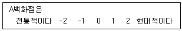
- 선다형
- 거트만 척도
- 의미차별화 척도
- 중요성 척도
- 서열척도
(정답률: 53%)
48. 생산업체가 2개, 소매상이 2개, 소비자가 4명일 경우 발생할 수 있는 총 거래의 수는 몇 개인가?
- 6
- 8
- 10
- 12
- 16
(정답률: 45%)
49. 풀(pull)전략에서 촉진활동을 수행하는 주체와 그 대상을 올바르게 나타낸 것은?
- 도매상 → 제조업자
- 소매상 → 도매상
- 제조업자 → 소비자
- 도매상 → 소비자
- 소매상 → 제조업자
(정답률: 60%)
50. POS(point of sales)에 대한 설명으로 옳지 않은 것은?
- 판매시점에서 판매와 관련된 정보를 관리하는 시스템이다.
- 단품관리, 자동판독, 판매시점에서의 정보입력 등이 가능하다는 장점이 있다.
- 북미지역에서 사용하는 UPC(Universal Product Code)와 유럽에서 사용하는 EAN(European Article Number)이 있다.
- 유통업체에서는 물품 입고 후 소스마킹(source marking)을 하여야 POS가 제대로 작동될 수 있다.
- 판매 및 재고에 관한 데이터를 제조업체에 바로 전송하여 제조업체가 생산계획을 조절할 수 있게 도움을 준다.
(정답률: 48%)
51. 다음 사례의 H백화점이 A상품에 수행한 가격결정방식은?
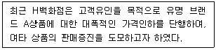
- 노획 가격결정(captive pricing)
- 단위 가격결정(unit pricing)
- 손실 유도 가격결정(loss leader pricing)
- 이원 가격결정(two-part pricing)
- 묶음 가격결정(price bundling)
(정답률: 75%)
52. 중간상 공제에 대한 설명으로 옳지 않은 것은?
- 입점 공제(slotting allowances) : 소매업자가 신상품을 취급해 주는 대가로 입점시 제조업자가 상품대금의 일부를 공제해주는 것
- 판매 공제(selling allowances) : 소매업자가 특정제조업체의 상품을 대량으로 판매한 성과에 대해 제조업자가 일정금액을 사후에 소매상에게 지불해 주는 것
- 광고 공제(advertising allowances) : 소매업자가 자신의 광고물에 제조업자의 상품을 광고해 주는 대가로 제조업자가 상품대금의 일부를 공제해주는 것
- 진열 공제(display allowances) : 소매업자가 점포내 눈에 잘 띠는 특정 공간에 일정 기간 상품을 진열해주는 대가로 제조업자가 상품대금의 일부를 공제해주는 것
- 중간상 공제(trade allowances) : 유통업자가 제조업자를 위하여 어떤 일을 해주는 대가로 제조업자가 상품대금의 일부를 공제해주는 것
(정답률: 40%)
53. 제조기업이나 서비스기업이 실행하는 가격 전략에 대한 설명으로 옳은 것은?
- 학생들에게 신문구독료를 할인하는 것은 간접적 가격할인이다.
- 기본요금과 주행요금으로 구성된 택시요금은 전형적인 이중요율이다.
- 프린터는 싸게 팔고, 잉크 카트리지는 비싸게 파는 것은 부산물 가격결정이다.
- 패스트푸드점에서 햄버거와 음료 등을 세트로 묶어서 싸게 파는 것은 수량할인이다.
- 심야영화를 2편 묶어서 싸게 제공하는 것은 전형적인 구매자에 따른 가격차별이다.
(정답률: 60%)
54. 다음 사례보고서의 ㉠과 ㉡에 해당하는 경로파워를 올바르게 나열한 것은?
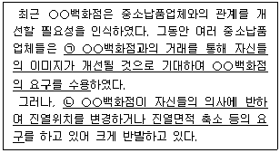
- ㉠ : 전문적 파워 ㉡ : 불법적 파워
- ㉠ : 준거적 파워 ㉡ : 강압적 파워
- ㉠ : 보상적 파워 ㉡ : 전문적 파워
- ㉠ : 정보적 파워 ㉡ : 보상적 파워
- ㉠ : 합법적 파워 ㉡ : 강압적 파워
(정답률: 77%)
55. 일반적인 소매점포 믹스의 구성 요인이 아닌 것은?
- 입지
- 상품구색
- 마진과 회전율
- 촉진
- 유통정보시스템
(정답률: 60%)
56. 제품 구매를 유도하기 위한 인센티브로서, 커피 구매시 머그컵을 또는 맥주 구매 시 맥주잔을 제공하는 것처럼 일반적으로 제품과 연관되어 있는 상품을 활용하는 판촉수단을 무엇이라 하는가?
- 현금 환불
- 광고 판촉물
- 콘테스트
- 푸시 지원금
- 프리미엄
(정답률: 70%)
57. 유통 경로의 성과를 평가하기 위한 정성적 척도에 해당하지 않는 것은?
- 최상위 목표에 대한 인식
- 경로리더십의 개발정도
- 기능적인 중복의 정도
- 거래중단 중간상의 비율
- 기능적 이전(functional spinoffs)의 유연성
(정답률: 71%)
58. 많은 구매자와 많은 판매자로 구성된 시장으로, 어떤 구매자나 판매자도 시장가격결정에 큰 영향을 미치지 못하는 경쟁상태는?
- 완전경쟁
- 독점적 경쟁
- 과점적 경쟁
- 완전 독점
- 완전 과점
(정답률: 66%)
59. 다음 사례 속의 B백화점이 채택하고 있는 고객서비스 전략의 유형으로 가장 옳은 것은?
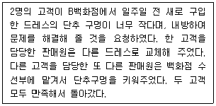
- 표준화 전략
- 맞춤화 전략
- 상용고객 우대 전략
- 디마케팅 전략
- 매스 커스터마이제이션 전략
(정답률: 71%)
60. 소매점의 상품전략은 상품구색의 폭과 깊이를 통해 실현된다. 상품구색의 폭보다는 깊이를 더 강조하는 전략을 채택하는 소매업태는?
- 편의점
- 슈퍼마켓
- 전문점
- 백화점
- 홈쇼핑업체
(정답률: 79%)
61. 다음 글상자 안의 사회환경변화는 유통업체의 어떤 서비스에 가장 직접적인 영향을 주는가?
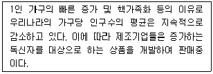
- 구색의 다양성
- 종업원 서비스
- 신용제공
- 최소 판매단위(lot size)
- 상품 품질의 일관성
(정답률: 69%)
62. 소매상의 환경분석에 대한 설명으로 가장 옳지 않은 것은?
- 소매상이 통제할 수 있는 내부자원들의 평가를 통해 강점과 약점을 파악한다.
- 소매상이 통제할 수 없는 외적인 요인을 분석하여 위협과 기회요인을 파악한다.
- 법의 제정, 개정 그리고 기술의 진보와 같이 거시적 사회변화를 불러오는 요인들은 환경분석 요소에 해당된다.
- 소비자의 구매 결정에 영향을 미치는 필요와 욕구 등의 변화를 분석하여 기회요인을 파악한다.
- 경쟁사가 제공하는 상품의 가격 및 마케팅 활동을 분석하는 것은 내적 요인 분석에 해당한다.
(정답률: 67%)
63. 제품의 수명주기에 따른 일반적인 유통경로전략에 대한 설명으로 가장 옳지 않은 것은?
- 도입기에는 소수의 중간상들에게만 제품을 공급하는 선택적 유통전략을 채택하는 경향이 있다.
- 도입기에는 수요의 불확실성으로 자사 제품을 취급하려는 중간상을 찾는데 어려움이 있을 경우에는 전속적 유통전략을 이용하기도 한다.
- 성장기에는 제품을 널리 보급하기 위해 전속적 유통전략을 이용한다.
- 성숙기에서의 기본적인 유통목표는 유통집약도를 지속적으로 강화 및 유지하는 것이다.
- 쇠퇴기가 되면 불량중간상과의 거래를 중단함으로써 자사제품을 취급하는 중간상의 수를 줄여나간다.
(정답률: 50%)
64. 프랜차이즈 시스템에서 가맹점(franchisee)이 되었을 때의 장점으로 옳지 않은 것은?
- 본부(franchisor)가 개발한 사업 상품 및 경영방식으로 인해 쉽게 사업을 시작할 수 있다.
- 지명도가 높은 상표명을 사용하므로 초기부터 소비자의 신뢰 확보가 가능하다.
- 본부(franchisor)가 일괄적으로 매장의 종업원을 채용하고 관리하므로 노사문제에 대한 우려가 낮다.
- 본부(franchisor)가 계속적으로 기존 제품을 개선하고 신제품을 개발해주므로 시장여건 변화에 보다 적절히 대응할 수 있다.
- 광고, 신상품개발 등을 본부(franchisor)가 집중관리해 주기 때문에 가맹점(franchisee)은 판매 활동에만 전념할 수 있다.
(정답률: 76%)
65. 오픈 가격제(open pricing)에 대한 설명으로 옳지 않은 것은?
- 제조업자는 출하가격만을 제시하고 소매업체가 자율적으로 가격을 결정한다.
- 실제 판매가보다 부풀려 소비자가격을 표시한 뒤 할인해 주는 할인판매의 폐단을 근절시키기 위해 도입된 것이다.
- 유통업체간의 경쟁을 촉진시켜 상품가격을 전반적으로 낮추는 효과를 달성하고자 하는 것이다.
- 가격파괴 유통업태의 등장으로 인해 판매가격을 상승시키는 요인이 되었다.
- 과자, 라면, 아이스크림 등과 같은 편의품 또한 오픈 가격제 품목에 해당된다.
(정답률: 63%)
66. 다음 글상자 안에서 설명하는 이것은?
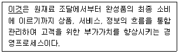
- 전략 기획
- 머천다이징
- 공급사슬관리
- 식스시그마
- 비즈니스 프로세스 리엔지니어링
(정답률: 50%)
67. 단품관리를 통해 기대할 수 있는 직접적인 효과로 거리가 먼 것은?
- 인기상품 발견 및 결품 최소화
- 비인기 상품의 판촉 방안 확보
- 작업 및 매대 생산성 증가
- 책임 소재의 명확성
- 교차판매비율의 증가
(정답률: 47%)
68. 혁신적인 신제품이 주류시장(majority)의 소비자들에게 선택받지 못하고 실패하는 현상을 의미하는 용어는?
- 자기잠식
- 캐즘(chasm)
- 웨버(Weber)의 법칙
- 진입장벽
- 손실회피
(정답률: 53%)
69. 다음의 여러 성장전략 가운데서 혁신성이나 위험이 가장 낮고, 시간적으로도 가장 단기적인 성격의 성장전략이라고 볼 수 있는 것은?
- 제품개발(product development)
- 시장개척(market development)
- 전방통합(forward integration)
- 후방통합(backward integration)
- 시장침투(market penetration)
(정답률: 66%)
70. 유통경로에서 발생하는 갈등을 관리하는 행동적 방식으로 가장 옳지 않은 것은?
- 문제해결
- 설득
- 협상
- 협회 공동가입
- 중재
(정답률: 77%)
4과목: 유통정보
71. 아래 글상자의 ( )안에 들어갈 용어로 옳은 것은?
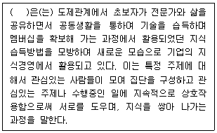
- CoP(Community of Practice)
- e-러닝(e-learning)
- 학습조직(Learning Organization)
- e-지식(e-knowledge)
- GCS(Group Collaboration System)
(정답률: 39%)
72. 물류프로세스에 대한 설명으로 가장 옳지 않은 것은?
- 물류프로세스는 고객의 요구를 충족시킴으로써 고객가치를 창출하는 것을 목표로 한다.
- 물류프로세스의 대표적인 흐름은 상품과 정보의 흐름이다.
- 물류프로세스의 범위는 공급지로부터의 원자재 구매, 생산지에서의 반제품 또는 완제품의 생산, 소비지로의 완제품 유통을 포괄한다.
- 물류의 주요 활동에는 상품의 흐름과 저장을 위한 활동이 포함된다.
- 물류활동에는 재고관리, 창고관리 및 하역활동을 포함하지만, 포장활동은 제외된다.
(정답률: 70%)
73. 데이터마이닝 기법의 하나인 연관 규칙 분석에 대한 사례이다. 이 사례의 결과가 의미하는 내용으로 가장 옳은 것은?
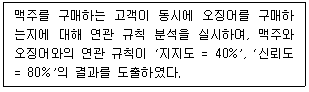
- 전체 고객 중에 맥주와 오징어를 동시에 구매한 고객은 40%이며, 맥주 구매 고객의 80%는 오징어를 구매한다는 것이다.
- 전체 고객 중에 맥주와 오징어를 동시에 구매한 고객은 80%이며, 맥주 구매 고객의 40%는 오징어를 구매한다는 것이다.
- 전체 고객 중에 맥주와 오징어를 동시에 구매한 고객은 80%이며, 오징어 구매 고객의 40%는 맥주를 구매한다는 것이다.
- 전체 고객 중에 맥주와 오징어를 동시에 구매한 고객은 40%이며, 오징어 구매 고객의 80%는 맥주를 구매한다는 것이다.
- 전체 고객 중에 맥주와 오징어를 동시에 구매한 고객은 80%이며, 맥주 구매 고객의 40%는 오징어를 구매하지 않았다는 것이다.
(정답률: 55%)
74. POS시스템의 운용 흐름과정을 가장 올바르게 나열한 것은?
- 상품 바코드 → 레지스터 → 스토아 컨트롤러 → POS터미널 → 본부 주컴퓨터
- 상품 바코드 → 레지스터 → POS터미널 → 스캐너 → 본부 주컴퓨터
- 상품 바코드 → 스캐너 → POS터미널 → 스토아 컨트롤러 → 본부 주컴퓨터
- 상품 바코드 → 스캐너 → 스토아 컨트롤러 → POS터미널 → 본부 주컴퓨터
- 상품 바코드 → OCR → POS터미널 → 레지스터 → 본부 주컴퓨터
(정답률: 56%)
75. 공개키(비대칭형) 암호화 방식에 해당하는 것은?
- RC4
- RSA(Rivest Shamir Adleman)
- SEED
- DES(Data Encryption Standard)
- IDEA(International Data Encryption Algorithm)
(정답률: 37%)
76. 도메인(Domain)이름은 관리기관 및 등록요건에 따라 관리된다. 도메인 이름과 그 설명이 잘못 연결된 것은?
- com, co - 회사
- edu, ac - 학교, 교육기관
- int - 국제적인 기구, 기관
- de - 연구소
- gov, go - 정부기관
(정답률: 69%)
77. 글상자가 설명하고 있는 정보기술에 해당하는 것은?
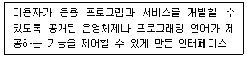
- Open API
- 웹크롤링
- RSS 리더
- 센싱
- 로그수집기
(정답률: 65%)
78. 기업이 고객관계관리를 위해 e-CRM을 구축하고, 웹로그 분석을 실시하고자 한다. 웹로그 파일에 대한 설명으로 가장 옳지 않은 것은?
- 웹서버를 통해 이루어지는 내용이나 활동 사항을 시간의 흐름에 따라 기록하는 파일을 웹로그 파일이라 한다.
- Access log는 웹사이트 방문자가 웹 브라우저를 통해 사이트 방문 시, 브라우저가 웹 서버에 파일을 요청한 기록과 시간, IP에 관련된 정보에 대한 기록이다.
- Refferer log는 웹 서버를 소개해 준 사이트와 소개받은 페이지를 기록함으로써 해당 웹사이트를 보기 위해서 어떤 페이지를 거쳐왔는지에 대한 기록이다.
- Transfer log는 사이트 방문자의 웹브라우저 버전, 운영체제의 종류, 화면해상도, 프로그램의 종류 등에 관한 정보로 최적화된 웹사이트를 구성할 수 있는 단서를 제공한다.
- Error log는 웹서버에서 발생하는 모든 에러와 접속실패에 대한 시간과 에러 내용을 모두 기록한다.
(정답률: 56%)
79. 형식지의 특성을 표현하는 내용으로 가장 옳지 않은 것은?
- 논리적인 지식
- 객관적인 지식
- 직감적인 지식
- 이성적인 지식
- 명시적인 지식
(정답률: 63%)
80. 채찍효과에 대한 기업의 적절한 대응으로 가장 옳지 않은 것은?
- 각 사슬에서 발생하는 수요정보를 한 곳에서 모니터링 할 수 있도록 지원하여 수요정보에 대한 잘못된 분석이 일어나지 않도록 관리한다.
- 생산부터 주문, 배송에 이르는 일련의 절차를 진행시키는데 드는 시간을 길게 잡고 장기적인 수요예측을 함으로서 단위주문 기간을 늘리고, 크기를 키운다.
- 공급사슬내 공급업체와 유통업체가 전략적인 동반자 관계를 형성한다.
- 공급사슬간 정보를 공유함으로서 필요한 때마다 적기에 원자재를 공급할 수 있도록 지원한다.
- 공급사슬내의 가격 변동이 큰 폭으로 일어나지 않도록 전략적 지원을 한다.
(정답률: 73%)
81. (가), (나), (다)에 들어갈 용어를 올바르게 나열한 것은?
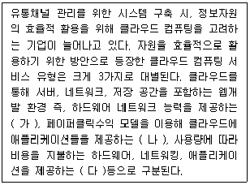
- (가) PaaS, (나) SaaS, (다) IaaS
- (가) IaaS, (나) SaaS, (다) PaaS
- (가) SaaS, (나) PaaS, (다) IaaS
- (가) SaaS, (나) IaaS, (다) PaaS
- (가) PaaS, (나) IaaS, (다) SaaS
(정답률: 22%)
82. 글상자가 설명하고 있는 효율적인 공급사슬을 구축하기 위한 전략적 제휴 방법은 무엇인가?
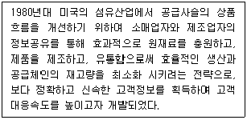
- QR(Quick Response)
- CMI(Co-Managed Inventory)
- CPFR(Collaborative Planning Forecasting & Replenishment)
- CD(Cross Docking)
- CRP(Continuous Replenishment Program)
(정답률: 70%)
83. 지식을 형식적으로 보존하는 지식 코드화의 장점으로 가장 옳지 않은 것은?
- 조직내에서 지식의 공유가 더욱 쉽게 이루어질 수 있다.
- 지식의 외재화는 지식을 비경쟁 재화에서 경쟁재화로 전환시킨다.
- 지식이 형식적으로 전환되면 조직의 정착물이 된다.
- 지식이 가시화되어 접근성이 향상되고, 부가가치적인 의사결정에 사용할 수 있게 된다.
- 형식적 지식의 저장고는 거래의 객체가 될 수 있다.
(정답률: 45%)
84. 인터넷상의 상거래 과정에서 사용되는 전자서명의 기본 조건과 그에 대한 설명으로 가장 옳지 않은 것은?
- 위조불가 - 서명자만이 서명문을 생성할 수 있다.
- 인증 - 서명문의 서명자를 확인할 수 있다.
- 재사용가능 - 서명문의 해쉬값을 전자서명으로 이용하므로 다른 문서에도 서명을 재사용할 수 있다.
- 변경불가 – 서명된 문서는 내용을 변경할 수 없기 때문에 데이터가 변조되지 않았음을 보장하는 무결성을 만족시켜준다.
- 부인방지 – 서명자가 나중에 서명한 사실을 부인할 수 없다.
(정답률: 67%)
85. 인스토어 마킹(Instore Marking)에 대한 설명으로 가장 옳은 것은?
- 제품의 생산 및 포장단계에서 마킹된다.
- 각각의 소매업체에서 나름의 기준으로 자유롭게 설정된 표준 코드체계에 의해 표시된다.
- 가공식품, 잡화 등 일반적으로 공장에서 제조되는 제품에 붙여진다.
- 전세계적으로 공통으로 사용 가능하다.
- 제조업체에서 포장지에 직접 인쇄하기 때문에 인쇄에 따른 추가비용이 거의 없다.
(정답률: 61%)
86. 경영자들이 흔히 범하는 의사결정 오류와 편견에 대한 설명으로 가장 옳지 않은 것은?
- 과신 편의 : 의사결정자가 자신이 알고 있는 것보다 더 많이 알고 있다고 판단하는 경우
- 고정관념 효과 : 의사결정자가 최초의 정보에 고정되어, 차후에 계속되는 정보를 적절히 반영하는 데 실패하는 경우
- 선택적 지각 편의 : 의사결정자가 자신의 편향된 인식을 토대로 사건들을 선택적으로 구성하거나 해석하는 경우
- 구성 편의 : 의사결정자가 상황에 대한 어떤 면은 배제하면서 다른 면은 선택하여 강조하는 경우
- 자기기여 편의 : 의사결정자가 일단 결과가 실제로 알려지게 되면 사건의 결과가 정확하게 예측될 수도 있었다고 그릇되게 믿는 경우
(정답률: 60%)
87. 경영자의 의사결정을 지원하는 역할을 담당하는 DSS(의사결정지원시스템)의 특성으로 가장 옳지 않은 것은?
- DSS는 의사결정과정을 비용 중심의 효율적인 면보다 목표 중심의 효과적인 측면에서 향상시킨다고 할 수 있다.
- DSS는 문제를 분석하고 여러 대안들을 제시해서 기준에 의한 최적의 대안을 선택하는 과정을 효과적으로 지원하는 것이다.
- DSS는 의사결정자의 판단을 지원하는 도구이지 그들의 역할을 대체하기 위한 도구가 아니다.
- DSS는 의사결정자가 정보기술을 활용하여 구조적인 의사결정유형의 문제를 해결하도록 지원하는 시스템이다.
- DSS는 정보기술을 기반으로 한 의사결정과정을 지원하는 인간과 기계의 상호작용 시스템이다.
(정답률: 35%)
88. 유통기능을 효율적으로 수행하기 위해서 유통정보시스템을 구축하는데, 이 경우 유통정보시스템은 보기에 제시된 단계들을 밟아 체계적으로 구축될 수 있다. 다음 중 유통정보시스템의 개발단계를 순서대로 올바르게 나열한 것은?
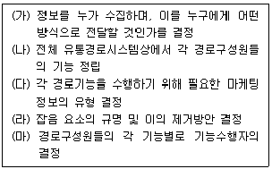
- (가) - (나) - (마) - (라) - (다)
- (가) - (다) - (나) - (마) - (라)
- (나) - (가) - (마) - (다) - (라)
- (나) - (가) - (라) - (다) - (마)
- (나) - (마) - (다) - (가) - (라)
(정답률: 21%)
89. 해킹의 공격유형과 그 설명으로 가장 옳지 않은 것은?
- Unix나 기타 시스템의 암호를 해독하는 행위를 패스워드 크래킹이라 한다.
- 네트워크상의 데이터를 도청하는 행위를 스니핑이라하고, 도청하는 해킹 도구를 스니퍼라 한다.
- 신뢰할 수 있는 클라이언트인 것처럼 속여 공격하는 기법을 스푸핑이라 한다.
- 네트워크에 연결된 여러 대의 컴퓨터를 이용하여 분산된 공격 거점을 이용하여 특정 서버나 네트워크에 대해 적법한 사용자의 서비스 이용을 방해하고자 시도하는 행위를 DDos 공격이라 한다.
- 개인정보를 탈취하기 위해 금융관련 사이트나 구매사이트 등과 동일하거나 유사한 형태의 웹사이트를 만들고 이를 사칭하여 중요정보를 남기도록 유도하는 형태의 공격기법을 클릭스트림이라 한다.
(정답률: 51%)
90. 정보의 유용성을 판별하기 위한 판단기준에 대한 설명으로 가장 옳지 않은 것은?
- 적시성 : 정보가 의사결정자에게 의미를 갖도록 적시에 제공될 수 있어야 한다.
- 적합성 : 의사결정에 적합하지 않은 데이터가 데이터베이스에 있어서는 안 된다.
- 신뢰성 : 데이터의 기밀성을 확인해야 한다.
- 비용효율성 : 데이터의 획득에 소요되는 비용과 그 가치에 대해 평가가 필요하다.
- 비교가능성 : 적합성이 확보된 다른 정보와 비교할 수 있어야 한다.
(정답률: 67%)